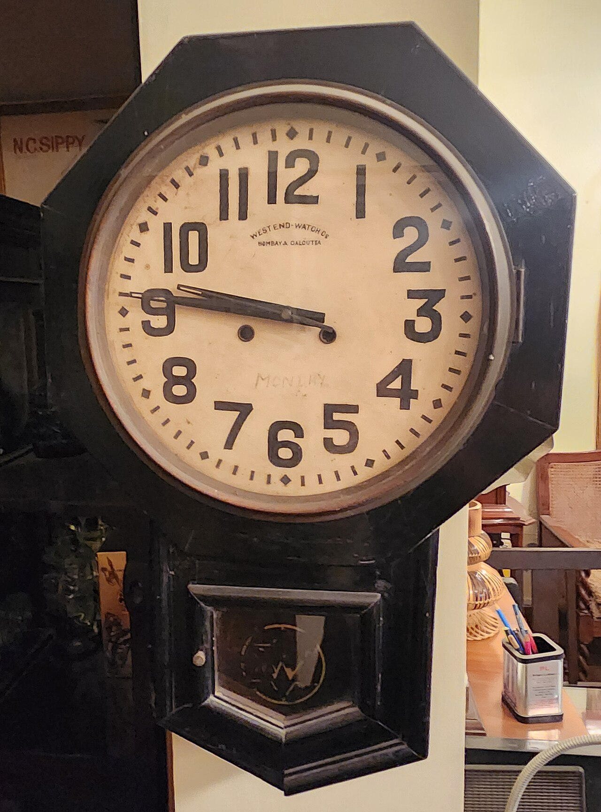
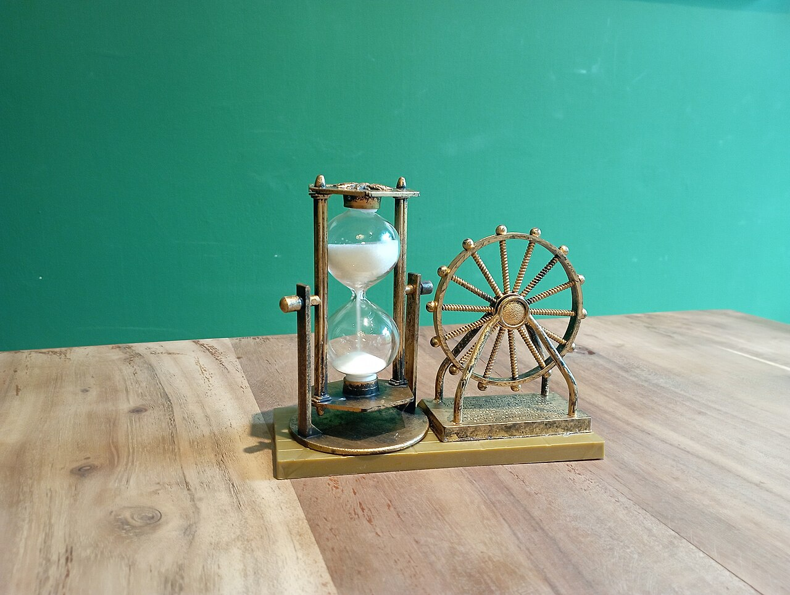
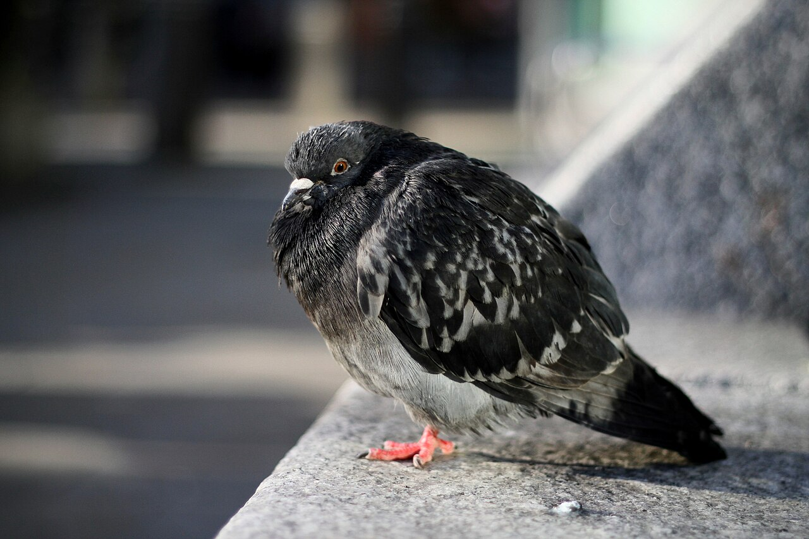
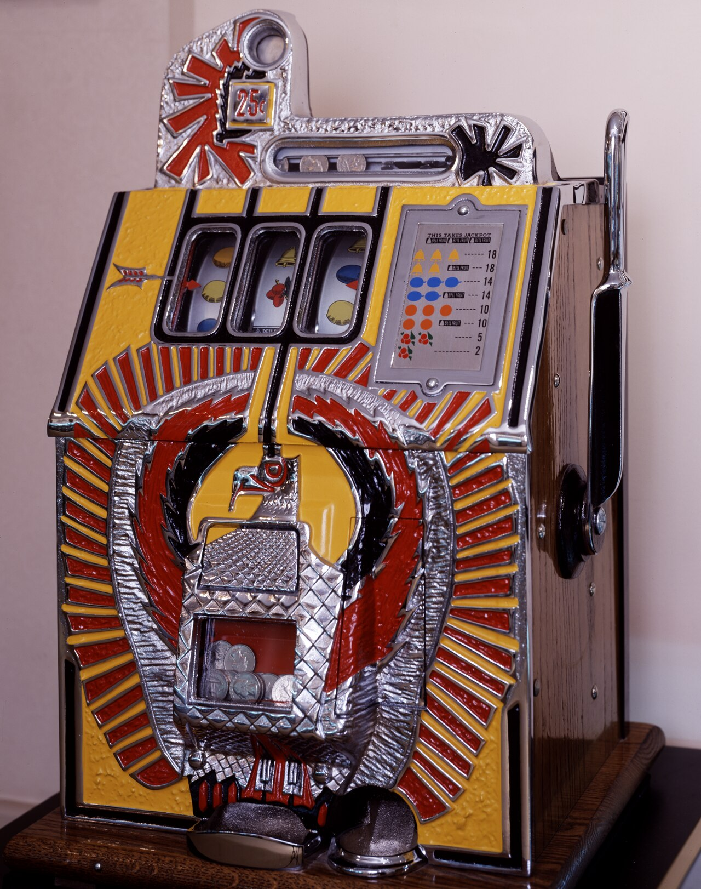
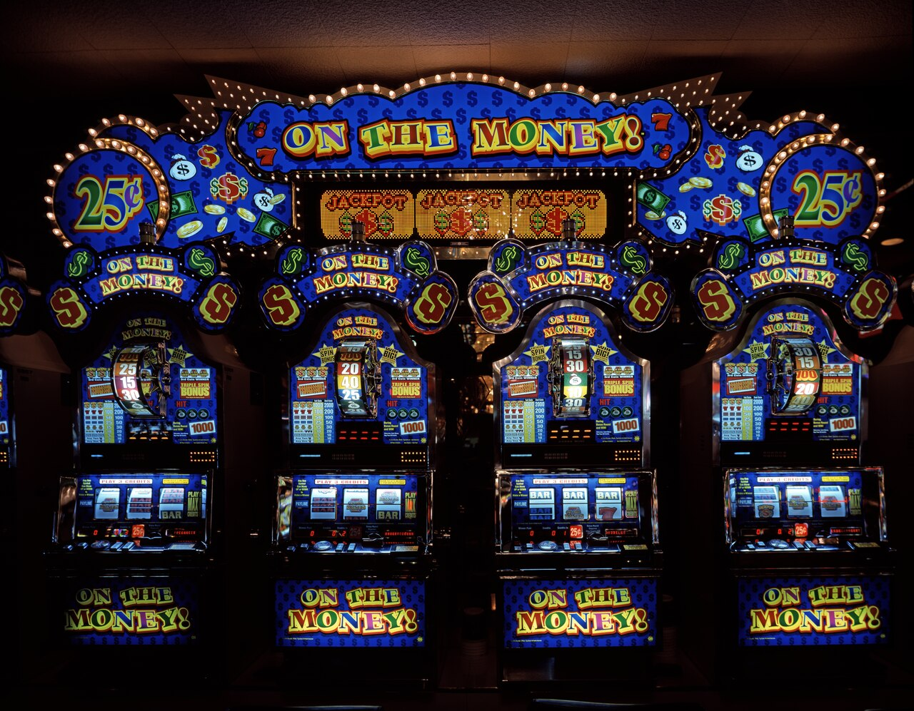

夜11時。寝る前に「5分だけ」とSNSを開きます。動画を2つ、友だちの写真を少し、知らない人の長い投稿をひとつ。顔を上げると、時計は11時40分を指しています。
同じ40分でも、病院の待合室なら、何度も時計を見てしまうほど長く感じるはずです。なぜSNSを見ていると、時間はあっという間に過ぎるのでしょうか。
「ちょっとだけ」のつもりが、気づけば40分。時間の長さを感じとる脳のしくみと、やめどきのない画面のしかけから、その理由を探ります。ただし、研究を見ていくと、話はそう単純でもなさそうです。脳の時計の図とグラフで、のぞいてみませんか。
夜11時。寝る前に「5分だけ」とSNSを開きます。動画を2つ、友だちの写真を少し、知らない人の長い投稿をひとつ。顔を上げると、時計は11時40分を指しています。
同じ40分でも、病院の待合室なら、何度も時計を見てしまうほど長く感じるはずです。なぜSNSを見ていると、時間はあっという間に過ぎるのでしょうか。
時間から注意がそれると、脳は時間をうまく数えられないと考えられる。しかも画面にはやめどきの合図がない。
私たちの体には、時計の針のようにはっきりした「時間を測る器官」はありません。では、どうやって「長かった」「短かった」を感じているのでしょうか。
心理学者のダン・ザカイとリチャード・ブロックが1995年に示した「注意のゲート」というモデルがあります。脳の中では、一定のリズムで「チク、チク」という合図が出ていると考えます。合図は「ゲート（門）」を通ったものだけが数えられ、数が多いほど、時間を長く感じます。
このゲートを開け閉めしているのが「注意」です。時間を気にしているとゲートは大きく開き、ほかのことに注意が向くと閉じぎみになります。もともとは、時間を気にしながら過ごすときの感じ方を説明するためのモデルです。


SNSの画面には、写真、動画、友だちの近況、知らない人の意見と、次から次へと気になるものが現れます。注意が画面に向き、時間を数えるゲートが閉じぎみになる。そう考えると、「あっという間」の感覚をうまく説明できます。このモデルをSNSに当てはめる考え方は、ひとつの有力な説明です。
本や雑誌には、章の終わりや最後のページがあります。テレビ番組にも終わりがあります。こうした区切りで、ふと我に返って時計を見る。つまり区切りは、時間に注意を戻し、ゲートを開くきっかけになります。
ところが多くのSNSでは、画面を下へなぞると次の投稿が自動で読みこまれ、なかなか終わりが来ません。この「無限スクロール」は、2006年にマイクロソフトの画像検索のチームが特許を出願したのが、記録に残る最初とされています。その後、多くのサービスに広がりました。

アメリカの心理学者B・F・スキナーは、ハトなどの動物を使って、行動とごほうびの関係を詳しく調べました。その研究から、ごほうびの出し方によって行動の続き方が大きく変わることがわかってきました。
心理学の教科書では、何回目でごほうびが出るか毎回変わるやり方が、反応がいちばん多くなりやすく、ごほうびをやめても行動が消えにくいとされています。平均すると決まった回数に1回は出るものの、次がいつかはわからない。これを「変動比率」と呼びます。

このやり方の身近な例とされるのが、カジノのスロットマシンです。何回目に当たるかはわかりません。SNSの画面にも似たところがある、と指摘されています。なぞるたびに「次は面白いかも」という小さな期待が生まれるからです。
画面を下に引っぱると新しい投稿が出る動き（引っぱって更新）には、スロットマシンのレバーに似ている、という批判もあります。そして「次は当たりかも」という期待は、注意を画面につなぎとめます。注意が画面にあるかぎり、時間を数えるゲートは閉じぎみのままです。


実際、どれくらいの時間をSNSに使っているのでしょうか。総務省の研究所が2024年度に行った調査では、10代（13〜19歳）と20代は、平日に1日平均67分、SNSを見たり書いたりしていました。この平均には、その日まったく使わなかった人も含まれています。
20代が休日にSNSを見る・書く時間（1日平均）総務省情報通信政策研究所、2024年度調査
全年代の平日の平均。前の年より0.9分増えた同上
「頭を使う量」と時間の感じ方の関係を調べた実験の数。下の「ここが面白い！」の研究で分析されたブロックら、2010年
時間の感じ方には、2つの測り方があります。時間を気にしながら「今、何分たった？」と測る場合と、終わってから「さっきのは何分だった？」と振り返る場合です。ブロックらは2010年、時間の感じ方を調べた117本の実験をまとめて分析しました。
すると、頭を使うことが多いほど、その場で測ると時間は短く感じられ、あとから振り返ると長く感じられるという、逆向きの結果が出ました。振り返るときは時計ではなく、記憶の中の変化の多さが手がかりになるためだと考えられています。動画、写真、ニュースと次々に見たSNSの40分は、その場では一瞬でも、思い返すと意外に長く感じるかもしれません。
次にSNSを開いたら、閉じるときに時刻を見て、「何分たったと思うか」を先に予想してみてください。その場の感覚、振り返った感覚、本当の時刻。3つがどれだけずれているかを見ると、自分の脳の時計のくせがわかります。